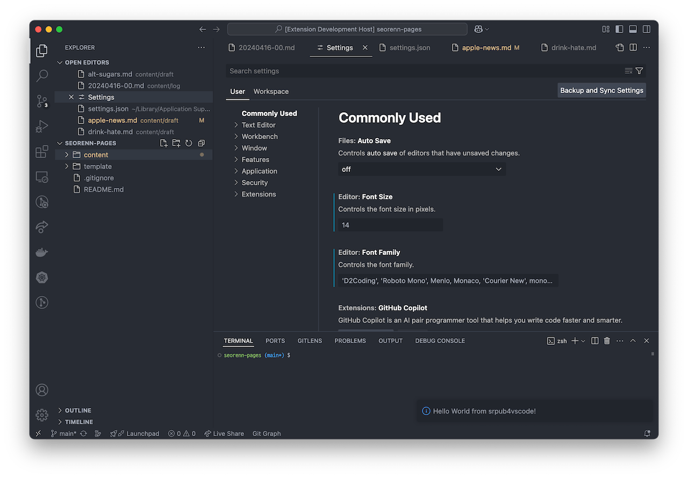

Visual Studio Code 확장(extensions) 개발 시작하기
Emacs와 비슷하게 Visual Studio Code(이하 vscode)도 기본은 준수한 편집기지만 역시 확장 덕분에 성공한 에디터다. 그렇기에 확장을 개발하는 방법에 대해서도 기본은 알고 있는 편이 좋지 않을까 싶어 살짝 삽을 꺼내들었다. 간단하게 확장 개발을 시작하고 테스트 하는 방법을 알아보자.
참고로 이 글은 macOS를 기준으로 쓰여졌다. 윈도우의 경우 터미널 환경이나 단축키 등이 조금 다를 수도 있다는 점에 주의하자.
vscode extension project
vscode 확장 개발을 시작하기 위해 node와 함께 yo 및 generator-code 패키지가 필요하다. 간단히 Homebrew와 npm 등으로 설치해 주자. 물론 설치되어 있다면 넘어가도 된다.
$ brew install node
$ npm i -g yo generator-code
이제 vscode extension 프로젝트를 시작해 보자. 아래와 같은 커맨드를 입력하면 vscode extension 프로젝트를 생성할 수 있다.
$ yo code
이러면 프로젝트를 구성하기 위해 몇몇 질문을 해온다. 적절히 답해주면 입력된 이름의 디렉터리가 생성되며 여기서 개발을 시작할 수 있다.
프로젝트 구성 작업이 끝나면 yo가 자동으로 vscode를 띄워주긴 하지만 그 다음에는 이 디렉터리에 들어가서 vscode를 띄워서 시작하자.
$ code .
vscode 확장 구경 및 테스트하기
기본적으로 작성된 보일러플레이트 코드의 내용을 보면 활성화 시 어떤 메시지를 표시하는 코드가 구현되는 것 같다. 그런데 어떻게 이걸 실행시키는 걸까? F5 키를 누르면 돌아간다고는 하는데 vscode가 새 창으로 뜰 뿐 별다른 변화가 안 보이니 말이다.
삽을 들고 여기저기를 찔러보다 package.json 파일에서 힌트를 찾을 수 있었다. 이 파일을 열어보면 아래와 같이 contriubtes 항목을 찾을 수 있다.
"contributes": {
"commands": [{
"command": "projectname.helloWorld",
"title": "Hello World"
}]
},
참고로 당연하겠지만 command 이름 자체는 프로젝트 이름에 따라 다를 수 있다.
이 내용으로 추측해 보면 기본적으로 생성되는 보일러플레이트 코드는 'Hello World'라는 vscode용 커맨드를 생성하는 확장이라는 것을 추측할 수 있다.
그렇다면 이제 extension.js 파일을 열어서 registerCommand 코드가 있는 부분을 찾아보자. 앞서 말한 어떤 메시지를 찍는 코드가 구현되어 있는 부분인데 대충 이런 식으로 생겼다.
const disposable = vscode.commands.registerCommand('projectname.helloWorld', function () {
// The code you place here will be executed every time your command is executed
// Display a message box to the user
vscode.window.showInformationMessage('Hello World from projectname!');
});
이제 대충 알겠다. projectname.helloworld라는 이름이 여기서도 보이는 것으로 보아 이것이 실제 함수와 연결되는 이름으로 추측할 수 있다. 즉 'Hello World'라는 커맨드를 실행시키면 projectname.helloworld라는 이름의 특정한 기능을 실행시킨다. 그리고 위 코드를 통해 projectname.helloworld라는 이름으로 실행될 함수를 실제로 구현할 수 있는 것으로 이해가 된다.
그렇다면 실제로 돌려보면 될 것 같다. F5 키를 눌러서 실행시킨 후 Command+Shift+P 키로 커맨드 팔레트를 열어서 'Hello World'를 찾아서 엔터로 실행시켜 보자. 그러면 화면에 뭔가가 표시될 것이다.
 예제와는 프로젝트 이름이 좀 다르지만 어쨌든 우측 하단에 메시지가 표시되었다.
정답이었다. 이런 식으로 개발하면서 테스트를 할 수 있다는 것을 알 수 있었다.
마무리
처음에는 저 코드를 어떻게 해야 실행시킬 수 있는가 오래 고민했었는데 저런 함수 기반의 명령어 시스템은 Emacs와 비슷해서 익숙한 느낌도 들었다. 어쨌든 기본적인 시작은 이걸로 할 수는 있을 것 같다.
하지만 역시나 vscode의 확장성에는 제한이 크다고 느껴진다. 어떤 틀에 갖혀있다고 해야 할까? 그런 규격이 있는 덕에 더 빠르게 성장한 면이 없는 건 아니겠지만 역시나 Emacs에 익숙한 사람으로써는 답답한 환경이라고도 느껴지기도 한다.
어쨌거나 기회가 되면 Emacs 용으로 만들어 둔 개인적인 스크립트들을 vscode로 옮겨보는 것도 의미가 있을 지도 모르겠다. 그 때를 기약하며 이 글은 마무리한다.